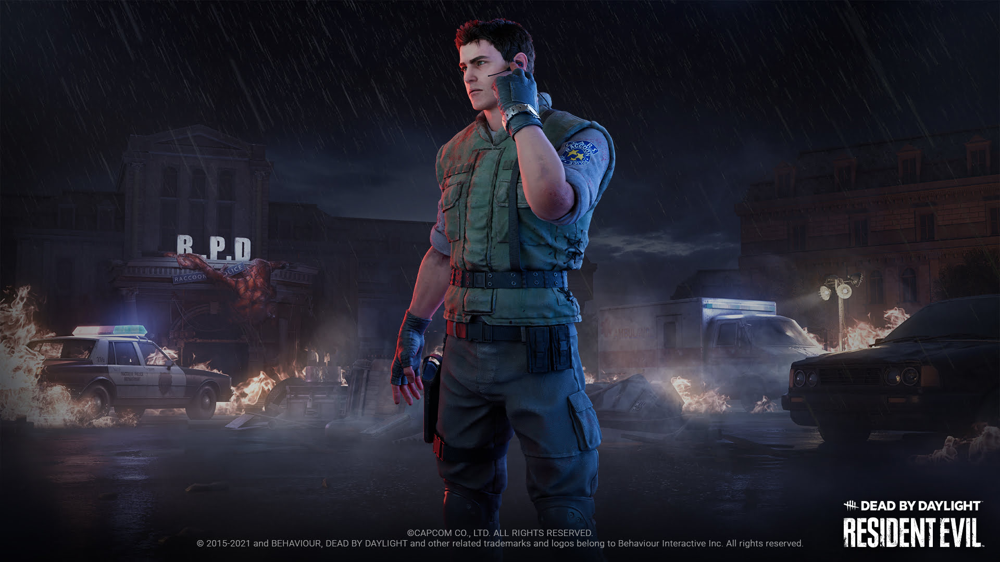

RESIDENT EVIL
Resident Evil es un nuevo capítulo de Dead by Daylight. Incluye al asesino Némesis y dos sobrevivientes, Leon S. Kennedy y Jill Valentine; además de un mapa nuevo: la estación de policía de Raccoon City. Al comprar el accesorio, desbloquearás al asesino, los dos sobrevivientes y un amuleto universal exclusivo nuevo.
Nemesis
Toma el control del arma bioorgánica sanguinaria de Umbrella y caza a tus objetivos sin piedad.
Leon Kennedy
Inquebrantable en su misión para exponer a Umbrella, Leon demostró ser un verdadero sobreviviente en su primer día con la policía de Raccoon City.
Jill Valentine
Jill es una agente de S.T.A.R.S. increíble, una de las pocas sobrevivientes de su unidad y un objetivo difícil incluso para el adversario más implacable.
Chris Redfield
Chris Redfield, quien una vez fue un destacado piloto en las Fuerzas Aéreas, se unió al equipo Alfa de S.T.A.R.S. como líder y tuvo que enfrentarse a nuevos desafíos.Chris Redfield está disponible como set legendario de Leon S. Kennedy.
Claire Redfield
Claire se vio atrapada sorpresivamente en Raccoon City y se valió de las habilidades que le enseñó su hermano para sobrevivir al riesgo biológico. Claire Redfield está disponible como set legendario de Jill Valentine.